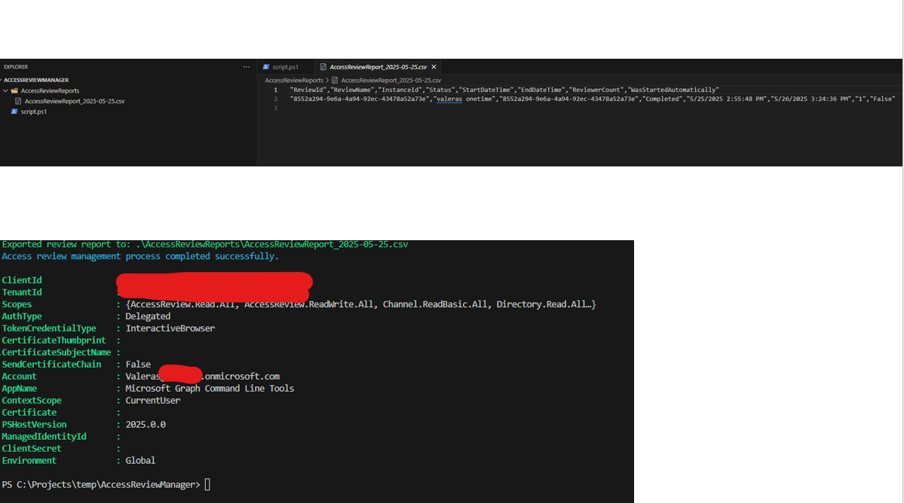

Download Access-Review results across all groups
Summary
This script automates the management and reporting of Access Reviews in Entra ID. It addresses the common problem where access reviews are often left uncompleted or unattended. The script:
- Enumerates all access review definitions in your tenant
- Identifies and triggers any overdue reviews
- Polls for completion status of active reviews
- Exports all decisions (accessReviewInstanceDecisionItem) to CSV for audit and record-keeping
The automation helps security and compliance teams ensure that access reviews are completed on time and provides thorough documentation of all decisions made during the review process.

Prerequisites
- Microsoft Graph PowerShell SDK modules
- Permissions required:
- AccessReview.Read.All (to enumerate and read access reviews)
- AccessReview.ReadWrite.All (to start reviews and retrieve decisions)
- An account with appropriate permissions to run access reviews
- PowerShell 5.1 or higher
#-----------------------------------------------------------------------
# Kick-off & Download Access-Review Results Across All Groups
#
# This script will:
# 1. Connect to Microsoft Graph with the required permissions
# 2. Enumerate all access review definitions
# 3. Start any overdue reviews
# 4. Poll for completion
# 5. Export all decisions to CSV for audit purposes
#-----------------------------------------------------------------------
# Check if the required modules are installed and import them
if (!(Get-Module -Name Microsoft.Graph)) {
Write-Host "Microsoft Graph PowerShell module not found. Installing..." -ForegroundColor Yellow
Install-Module Microsoft.Graph -Scope CurrentUser -Force
}
# Connect to Microsoft Graph with the required permissions
Connect-MgGraph -Scopes "AccessReview.Read.All", "AccessReview.ReadWrite.All" -NoWelcome
# Set the output directory for reports
$outputDir = ".\AccessReviewReports"
if (!(Test-Path $outputDir)) {
New-Item -ItemType Directory -Path $outputDir | Out-Null
}
# Get the current date for reporting
$currentDate = Get-Date -Format "yyyy-MM-dd"
$reportFile = Join-Path $outputDir "AccessReviewReport_$currentDate.csv"
$decisionsFile = Join-Path $outputDir "AccessReviewDecisions_$currentDate.csv"
# Function to get all access review definitions
function Get-AllAccessReviews {
try {
# Get all access review definitions
$accessReviews = Invoke-MgGraphRequest -Uri "https://graph.microsoft.com/v1.0/identityGovernance/accessReviews/definitions" -Method GET
return $accessReviews.value
}
catch {
Write-Error "Error retrieving access review definitions: $_"
return $null
}
}
# Function to start an overdue access review
function Start-OverdueAccessReview {
param (
[Parameter(Mandatory = $true)]
[string]$ReviewId
)
try {
# Start the access review
Invoke-MgGraphRequest -Uri "https://graph.microsoft.com/v1.0/identityGovernance/accessReviews/definitions/$ReviewId/start" -Method POST
Write-Host "Successfully started access review: $ReviewId" -ForegroundColor Green
return $true
}
catch {
Write-Error "Error starting access review $ReviewId : $_"
return $false
}
}
# Function to get all instances of an access review
function Get-AccessReviewInstances {
param (
[Parameter(Mandatory = $true)]
[string]$ReviewId
)
try {
# Get all instances of the access review
$instances = Invoke-MgGraphRequest -Uri "https://graph.microsoft.com/v1.0/identityGovernance/accessReviews/definitions/$ReviewId/instances" -Method GET
return $instances.value
}
catch {
Write-Error "Error retrieving instances for access review $ReviewId : $_"
return $null
}
}
# Function to get all decisions for an access review instance
function Get-AccessReviewDecisions {
param (
[Parameter(Mandatory = $true)]
[string]$ReviewId,
[Parameter(Mandatory = $true)]
[string]$InstanceId
)
try {
# Get all decisions for the access review instance
$decisions = @()
$uri = "https://graph.microsoft.com/v1.0/identityGovernance/accessReviews/definitions/$ReviewId/instances/$InstanceId/decisions"
do {
$response = Invoke-MgGraphRequest -Uri $uri -Method GET
$decisions += $response.value
$uri = $response.'@odata.nextLink'
} while ($uri)
return $decisions
}
catch {
Write-Error "Error retrieving decisions for access review instance $InstanceId : $_"
return $null
}
}
# Main script execution
Write-Host "Starting access review management process..." -ForegroundColor Cyan
# Get all access review definitions
$allReviews = Get-AllAccessReviews
if ($null -eq $allReviews) {
Write-Host "No access reviews found or error retrieving them. Exiting." -ForegroundColor Red
exit
}
Write-Host "Found $($allReviews.Count) access review definitions." -ForegroundColor Green
# Create an array to store review information for reporting
$reviewReport = @()
$allDecisions = @()
# Process each access review
foreach ($review in $allReviews) {
Write-Host "Processing Access Review: $($review.displayName)" -ForegroundColor Cyan
# Check if the review is overdue to start
$shouldStart = $false
if ($review.status -eq "NotStarted") {
$startDateTime = [DateTime]::Parse($review.schedule.startDateTime)
if ($startDateTime -lt (Get-Date)) {
$shouldStart = $true
Write-Host " Review is overdue to start. Attempting to start it now..." -ForegroundColor Yellow
$started = Start-OverdueAccessReview -ReviewId $review.id
if ($started) {
$review.status = "InProgress"
}
}
}
# Get instances for this review
$instances = Get-AccessReviewInstances -ReviewId $review.id
if ($null -eq $instances) {
Write-Host " No instances found for this review." -ForegroundColor Yellow
continue
}
Write-Host " Found $($instances.Count) instances for this review." -ForegroundColor Green
# Process each instance
foreach ($instance in $instances) {
# Add to the report
$reviewInfo = [PSCustomObject]@{
ReviewId = $review.id
ReviewName = $review.displayName
InstanceId = $instance.id
Status = $instance.status
StartDateTime = $instance.startDateTime
EndDateTime = $instance.endDateTime
ReviewerCount = $instance.reviewers.Count
WasStartedAutomatically = $shouldStart
}
$reviewReport += $reviewInfo
# If the instance is completed, get all decisions
if ($instance.status -eq "Completed") {
Write-Host " Getting decisions for completed instance $($instance.id)" -ForegroundColor Green
$decisions = Get-AccessReviewDecisions -ReviewId $review.id -InstanceId $instance.id
if ($null -ne $decisions -and $decisions.Count -gt 0) {
foreach ($decision in $decisions) {
$decisionInfo = [PSCustomObject]@{
ReviewId = $review.id
ReviewName = $review.displayName
InstanceId = $instance.id
DecisionId = $decision.id
ResourceId = $decision.resourceId
Decision = $decision.decision
ReviewedBy = $decision.reviewedBy.displayName
ReviewedByUpn = $decision.reviewedBy.userPrincipalName
AppliedBy = $decision.appliedBy.displayName
AppliedDateTime = $decision.appliedDateTime
Justification = $decision.justification
}
$allDecisions += $decisionInfo
}
Write-Host " Retrieved $($decisions.Count) decisions." -ForegroundColor Green
}
else {
Write-Host " No decisions found for this instance." -ForegroundColor Yellow
}
}
}
}
# Export the reports to CSV
if ($reviewReport.Count -gt 0) {
$reviewReport | Export-Csv -Path $reportFile -NoTypeInformation
Write-Host "Exported review report to: $reportFile" -ForegroundColor Green
}
if ($allDecisions.Count -gt 0) {
$allDecisions | Export-Csv -Path $decisionsFile -NoTypeInformation
Write-Host "Exported decision details to: $decisionsFile" -ForegroundColor Green
}
Write-Host "Access review management process completed successfully." -ForegroundColor Cyan
Disconnect-MgGraph
Check out the Microsoft Graph PowerShell SDK to learn more at: https://learn.microsoft.com/graph/powershell/get-started
Contributors
| Author(s) |
|---|
| Valeras Narbutas |
Additional Information
Key Microsoft Graph API Endpoints Used
List access review definitions:
GET /identityGovernance/accessReviews/definitions
Start an access review:
POST /identityGovernance/accessReviews/definitions/{reviewId}/start
Get access review instances:
GET /identityGovernance/accessReviews/definitions/{reviewId}/instances
Get access review decisions:
GET /identityGovernance/accessReviews/definitions/{reviewId}/instances/{instanceId}/decisions
Sample Output
The script produces two CSV files:
- Access Review Report - Lists all access review definitions and their instances with status
- Access Review Decisions - Contains all decisions made across completed reviews
Scheduling the Script
For optimal results, consider scheduling this script to run weekly to ensure that:
- New access reviews are started promptly
- Completed reviews have their decisions exported for record-keeping
- You have visibility into the overall access review health of your tenant
Disclaimer
THESE SAMPLES ARE PROVIDED AS IS WITHOUT WARRANTY OF ANY KIND, EITHER EXPRESS OR IMPLIED, INCLUDING ANY IMPLIED WARRANTIES OF FITNESS FOR A PARTICULAR PURPOSE, MERCHANTABILITY, OR NON-INFRINGEMENT.